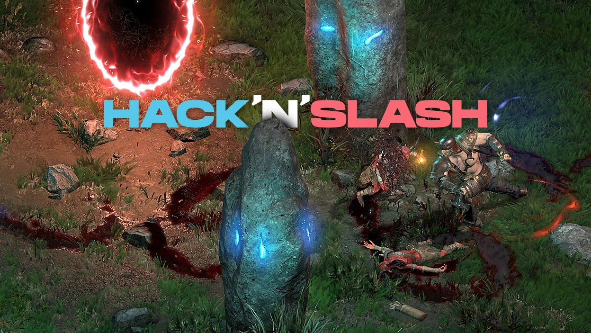
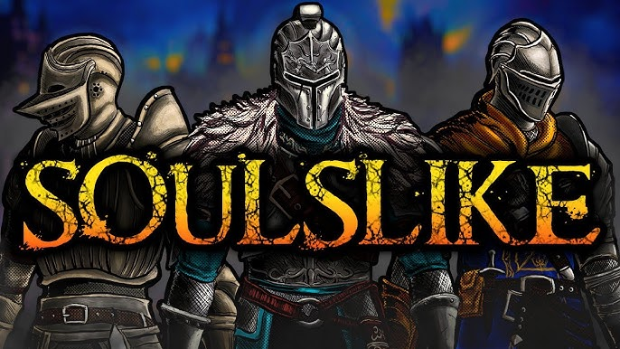

O Blogu
Blog Ludologiczny jest miejscem, gdzie pasjonaci gier komputerowych mogą znaleźć recenzje, artykuły i najnowsze informacje o wydarzeniach w świecie gier. Początkowo blog będzie się skupiał głównie na produkcjach typu hack'n'slash oraz soulslike. Jednakże planowane jest późniejsze rozwinięcie strony na inne gatunki gier.

